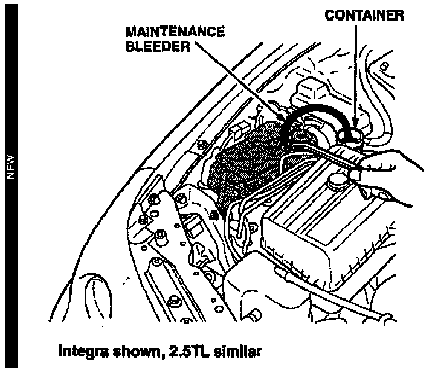
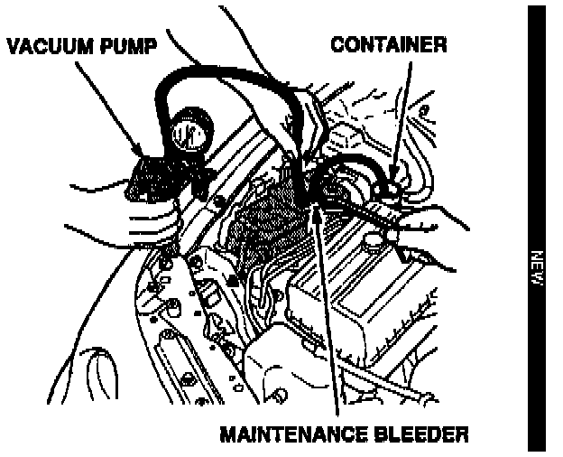

ABS Light Comes On
May 16, 1995BULLETIN NO.
93-016
YEAR [NEW]
1994-95
1995-95
MODEL [NEW]
INTEGRA
2.5TL
VIN APPLICATION [NEW]
ALL
ABS Light Comes On
(Supersedes 93-016, Integra ABS Light Comes On, dated September 7, 1993)
SYMPTOM
The ABS light comes on, and the ABS control unit stores a code 1.
PROBABLE CAUSE
Air trapped in the pump inlet causes the pump to run for 40 seconds without building system pressure.
CORRECTIVE ACTION
Bleed the air from the ABS to reestablish pressure. Reset the ABS control unit.
[NEW]
1. Make sure the ABS reservoir is full.

2. Connect a piece of clear tubing to the maintenance bleeder. Place the other end of the tubing in a container.
3. Relieve system pressure by loosening the maintenance bleeder. Close the bleeder when fluid stops flowing in the tubing.
4. Connect a piece of 3/8 inch O.D. hose to the pressure side of a hand-held vacuum pump.
5. Remove the filler cap from the modulator reservoir. Leave the plastic insert in the reservoir opening.

6. Hold the vacuum pump hose against the reservoir opening insert. Pressurize the reservoir by pumping the vacuum pump until you feel resistance (1 to 3 strokes).
7. Have an assistant start the engine. Allow the ABS pump to build pressure in the modulator.
8. Have the assistant turn off the engine. Slowly open the maintenance bleeder. Close the bleeder when brake fluid stops running into the tubing.
9. Repeat steps 7 and 8 five times to purge the air from the modulator.
10. Clear any codes in the ABS control unit memory by removing the ABS B2 fuse in the under-hood ABS fuse box for three seconds.
WARRANTY CLAIM INFORMATION
In warranty:
The normal warranty applies.
Out of warranty:
Any repair performed after warranty expiration may be eligible for goodwill consideration by the District Technical Manager or your Zone Office. You must request consideration, and get a decision, before starting work.
Operation number: 422070
Flat rate time: 0.5 hour [NEW]
Failed part: P/N 57110-ST7-003
Defect code: 074
Contention code: B03